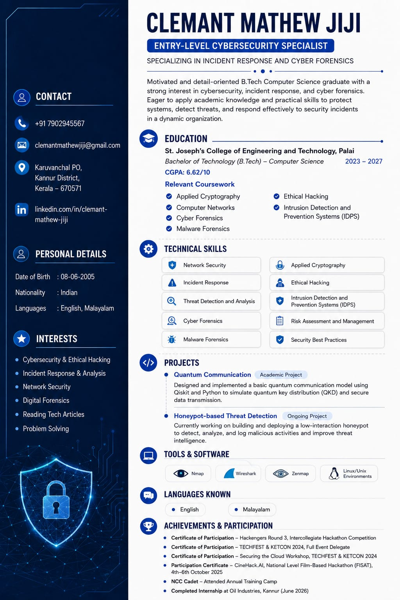

Hello, I'm Clemant Mathew Jiji
Detail-oriented Cybersecurity Specialist and B.Tech Computer Science student at St. Joseph's College of Engineering and Technology (SJCET), Palai. Eager to apply academic knowledge and practical skills in Incident Response, Threat Detection, Malware & Cyber Forensics, and Applied Cryptography.
2023-27
B.Tech CSE @ SJCET Palai
10+
Security & Forensics Skills
6+
Hackathons & Workshops
NCC
Cadet Training & Discipline
About Clemant
Defending Systems, Investigating Threats & Securing Networks
I am an enthusiastic Computer Science & Engineering undergraduate at St. Joseph's College of Engineering and Technology, Palai (SJCET Palai). My core passion lies in the realms of Incident Response, Cyber & Malware Forensics, Applied Cryptography, and Ethical Hacking.
With a disciplined mindset developed through active NCC Cadet training and practical hackathon engagements such as Hackengers Round 3 and CineHack.AI, I aim to protect systems, detect threats proactively, and respond effectively to security incidents.
Bachelor of Technology (B.Tech) - Computer Science
St. Joseph's College of Engineering and Technology (SJCET), Palai
Relevant Academic Coursework
Core Interests & Passions
Technical Arsenal
Core competencies, defensive frameworks, and specialized tools from Clemant's verified skillset.
Network Security
Deep knowledge of TCP/IP protocol suite, firewalling architectures, packet filtering, network segmentation, and defensive hardening.
Incident Response
Identification, containment, eradication, and root cause analysis during security incidents and anomalous intrusions.
Threat Detection & Analysis
Analyzing network telemetry, anomalous activity, Indicators of Compromise (IoCs), and signature-based threat hunting.
Cyber Forensics
Preserving chain of custody, digital evidence acquisition, volatile memory triage, disk artifact recovery, and forensic timeline reconstruction.
Malware Forensics
Static and dynamic analysis concepts, identifying malicious artifacts, payload behaviors, reverse-engineering concepts, and persistence mechanisms.
Applied Cryptography
Symmetric & asymmetric encryption, cryptographic hashing (SHA-256), PKI fundamentals, and quantum key distribution (QKD) modeling.
Ethical Hacking
Reconnaissance, vulnerability scanning, security audits, credential defense, and simulating penetration scenarios to harden endpoints.
Intrusion Detection & Prevention (IDPS)
Configuring detection signatures, rule matching, anomalous pattern alerting, and blocking suspicious packet flows in real time.
Security Software & Linux
Mastery in Nmap, Wireshark, Zenmap, and Linux/Unix environments for network auditing, deep PCAP analysis, and CLI automation.
SOC Terminal Console
Execute interactive CLI commands to inspect Clemant's profile, audit security skills, or simulate an incident scan.
============================================================
CLEMANT MATHEW JIJI // CYBERSECURITY SOC OS v2.4
B.Tech CSE @ SJCET Palai | Incident Response & Forensics
============================================================
Type 'help' to view available commands, or click any quick button above.
Projects & Security Labs
Hands-on quantum security models, threat detection honeypots, and digital forensics investigations.
Quantum Communication & Key Distribution (QKD)
Designed and implemented a quantum communication model using Qiskit and Python to simulate Quantum Key Distribution (QKD) and evaluate quantum-secured data transmission against eavesdropping.
Honeypot-Based Threat Detection System
Building and deploying a low-interaction honeypot architecture to lure, detect, analyze, and log malicious intruder activities in real time to generate actionable threat intelligence and IoCs.
Network Traffic Sniffing & Anomaly Detection
Configured Wireshark and Zenmap scripts to capture and dissect live network traffic. Identified suspicious ARP spoofing attempts, TCP SYN flood anomalies, and cleartext credential leakage.
Digital & Malware Forensics Evidence Acquisition
Executed disk imaging, volatile memory triage, and artifact recovery on simulated compromised environments. Extracted deleted event logs and verified cryptographic hash integrity (MD5 & SHA-256).
Experience & Achievements
Hackathon participations, industry internship, workshops, and leadership milestones.
Completed Internship at Oil Industries, Kannur
Completed industry internship at Oil Industries, Kannur. Gained hands-on experience in corporate IT operations, workstation security auditing, data hygiene, and industrial system resilience.
Participation Certificate – CineHack.AI (FISAT)
Selected and participated in CineHack.AI, a National Level Film-Based Hackathon hosted at Federal Institute of Science and Technology (FISAT). Collaborated on rapid problem solving and technology integration under tight constraints.
Certificate of Participation – Hackengers Round 3
Competed in Round 3 of the Hackengers Intercollegiate Hackathon Competition. Tackled computational challenges, algorithmic optimization, and strategic technical problem-solving.
TECHFEST & KETCON 2024 — Delegate & Cloud Security
Attended TECHFEST & KETCON 2024 as a Full Event Delegate. Earned a Certificate of Participation in the hands-on "Securing the Cloud" workshop focusing on cloud defense and IAM security.
NCC Cadet – Attended Annual Training Camp
Successfully completed rigorous NCC (National Cadet Corps) Annual Training Camp. Developed high personal discipline, crisis management aptitude, teamwork, and tactical coordination skills.
Official Resume / CV
Preview or download the verified CV of Clemant Mathew Jiji.

{kind=link}
Get In Touch
Have an internship opportunity, cybersecurity project, or want to collaborate? Connect with me directly.
Direct Communication Channels
Feel free to reach out via phone, email, or LinkedIn. I am readily available to discuss cybersecurity, forensic workflows, or internship opportunities.